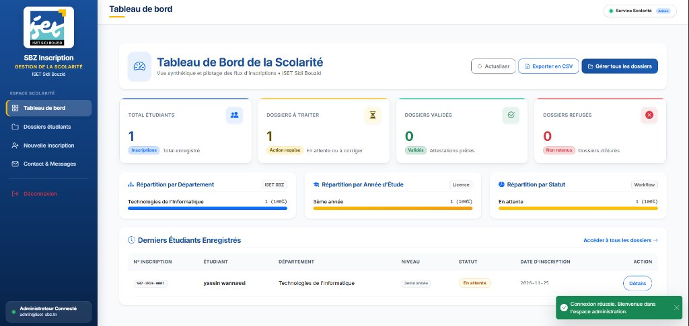
SBZ Inscription
Système de gestion de la scolarité pour l’ISET Sidi Bouzid : tableau de bord analytique, suivi des dossiers (validés, en attente, refusés), export CSV et espace administration.
Portfolio · Développeur Web
Je conçois des applications web modernes, de l’interface à la base de données. Je prépare actuellement mon Projet de Fin d’Études (PFE).
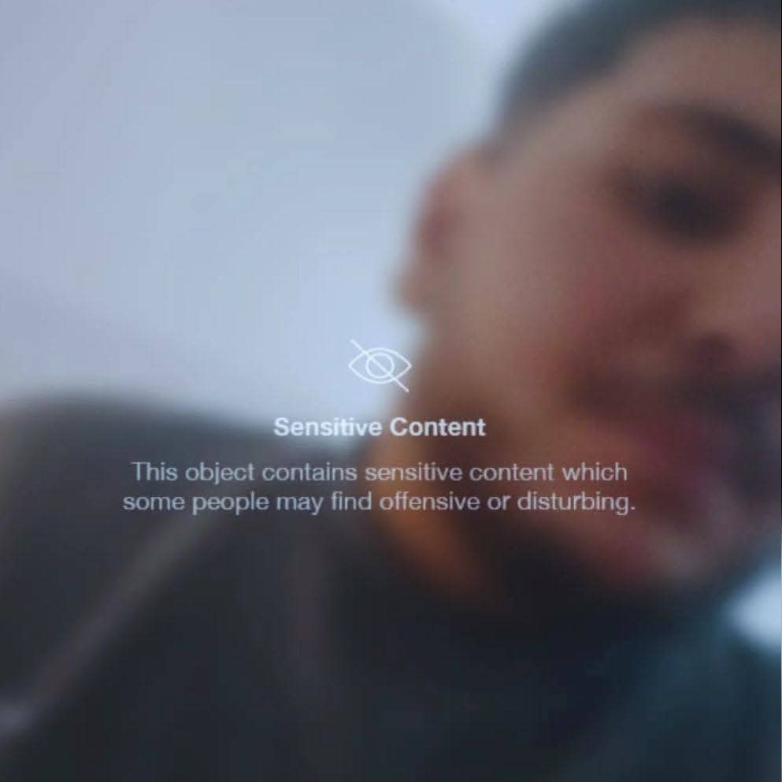

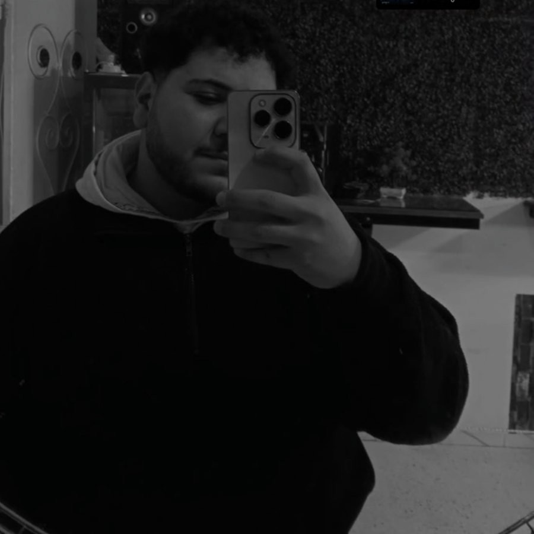
Étudiant en Licence MDW (classe MDW 32) à l’ISET Sidi Bouzid, diplômé en 2026.
Passionné par le développement web, je transforme des idées en produits concrets : tableaux de bord interactifs, applications de gestion, back-ends PHP/Symfony et plateformes institutionnelles. Mes stages chez Tunisie Télécom et La Poste Tunisienne ainsi que mes formations en leadership et entrepreneuriat renforcent ma rigueur sur le terrain.
Formation académique, stages en entreprise et engagements
Conception, architecture et réalisation d’une application web complète de bout en bout.
Bureau de poste Sidi Ali Ben Aoun (9120) · Conception et développement de la plateforme web SABO Poste 2.0.
ISET Sidi Bouzid (MDW 32) · TypeScript, Angular, PHP, Symfony, Java, Spring Boot et bases de données.
Participation aux programmes Innovation Camp (INJAZ Tunisia) et formation en entrepreneuriat vert et durable (Projet DYNAMO / Green UP!).
Certifications vérifiées en JavaScript Essentials 1 et Python Essentials 1.
Direction Régionale de Sidi Bouzid · Stage de formation au sein des services techniques et administratifs.
ISET Sidi Bouzid (Club CDS) · Développement des compétences en leadership, communication et gestion stratégique.
Applications réelles conçues et publiées sur GitHub

Système de gestion de la scolarité pour l’ISET Sidi Bouzid : tableau de bord analytique, suivi des dossiers (validés, en attente, refusés), export CSV et espace administration.
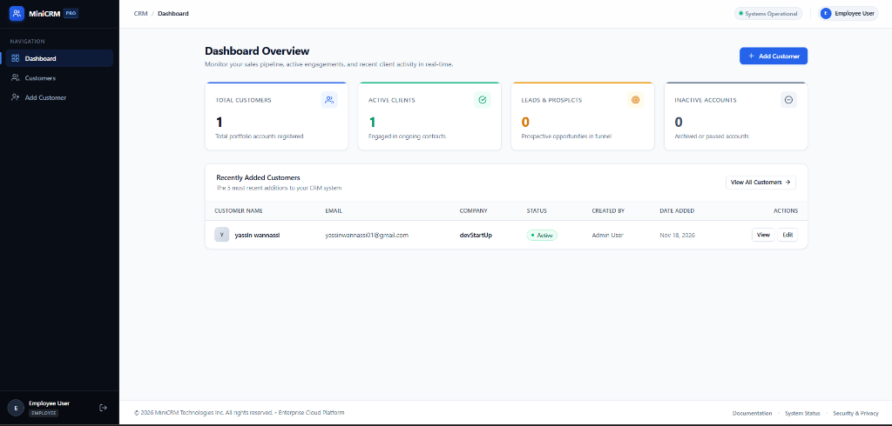
Application CRM de gestion client : vue d’ensemble des comptes actifs, suivi des prospects, ajout, consultation et édition de fiches clients en temps réel.
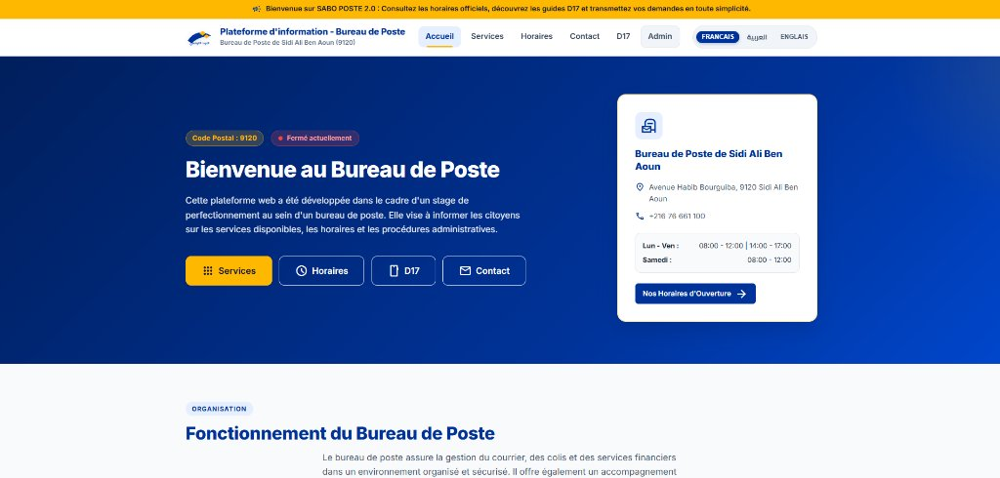
Plateforme web d’information du Bureau de Poste de Sidi Ali Ben Aoun (9120) : services, horaires officiels, guides D17, interface multilingue (FR / العربية / EN) et espace Admin.
Diplômes techniques vérifiés, attestations de stage et certificats de participation
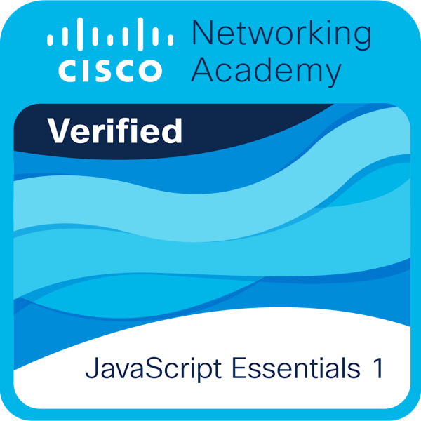
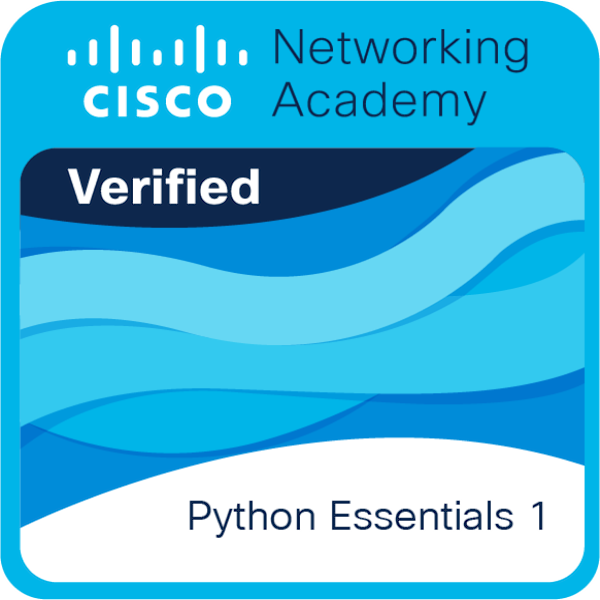
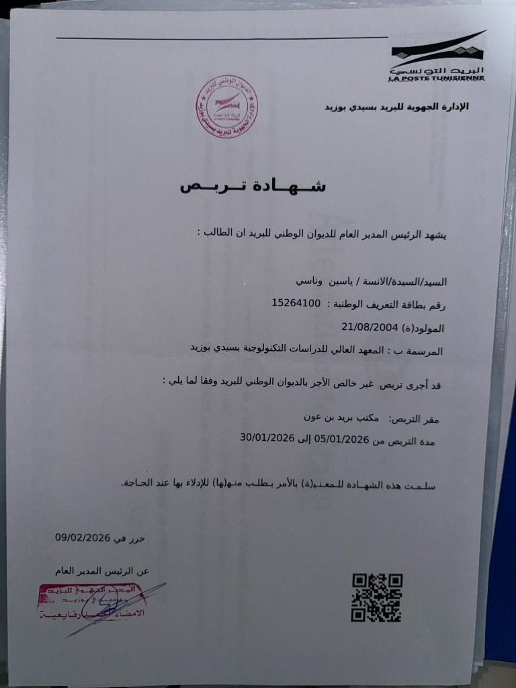
Bureau de Poste Ben Aoun · 05/01/2026 – 30/01/2026
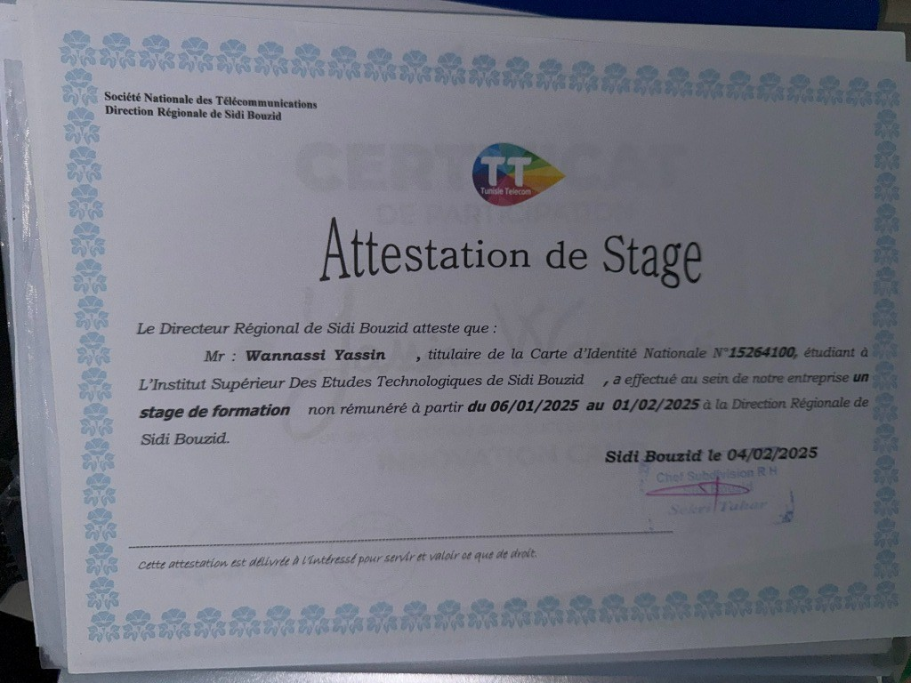
Direction Régionale de Sidi Bouzid · 06/01/2025 – 01/02/2025
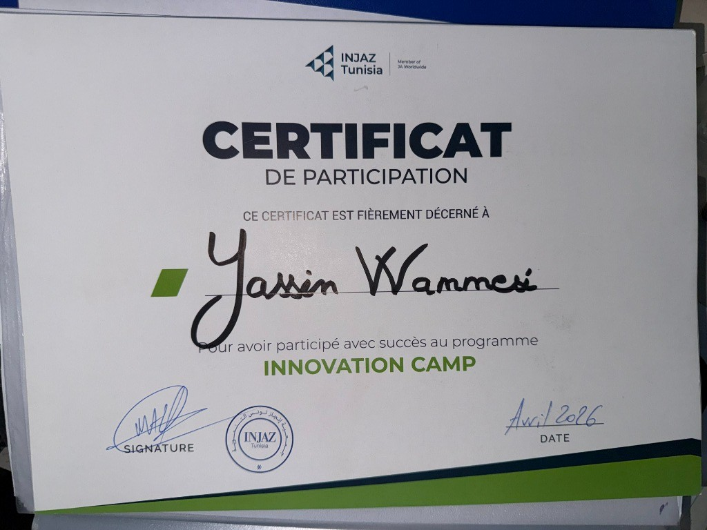
Certificat de participation · Avril 2026
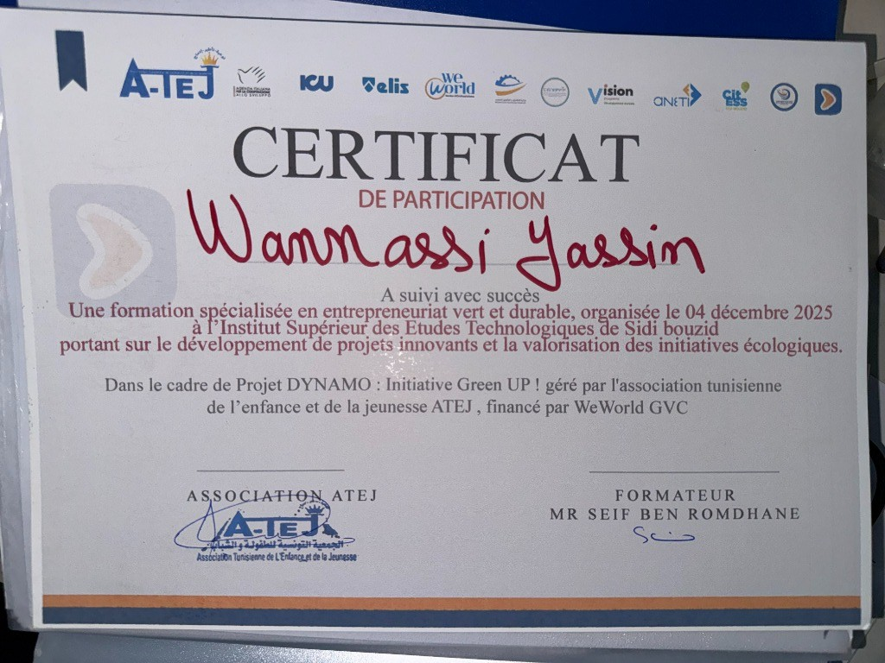
Projet DYNAMO : Green UP! · 04 décembre 2025
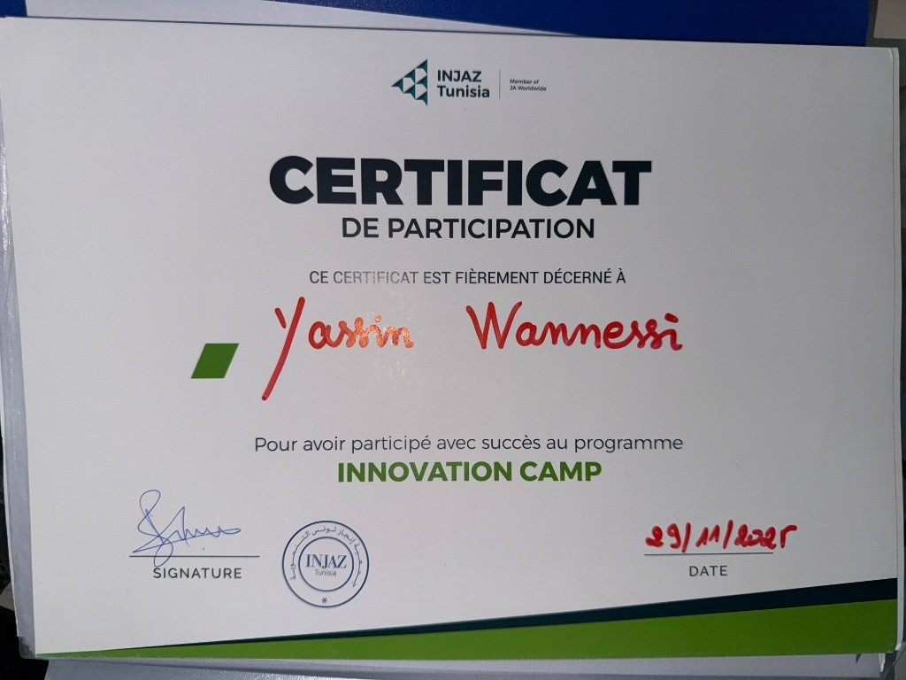
Certificat de participation · 29 novembre 2025
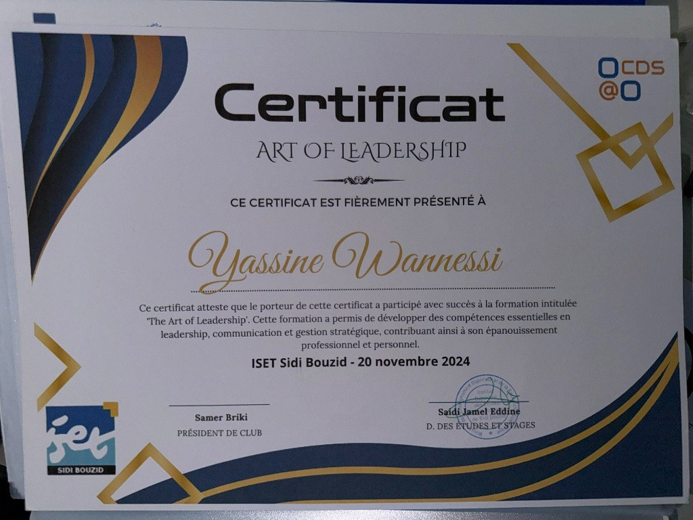
Leadership, communication & gestion · 20 novembre 2024